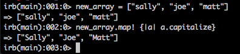

An Introduction
The enumerable module is basically an object (as most things in Ruby are!) that we can call into our programs. This module opens up some other useful methods for us, one of these being .map.
It may be your goal to iterate through an object and only keep some of the items depending on a certain criteria. Map will help us do this!
The map method creates a new array based on an original array, but with modified values based on your code block.
For example, to modify an array that is [1, 2, 3, 4] we can use map. Let’s say we want to add 1 to each item in the array. The syntax would look like this:
arr.map { |a| a + 1} and will return [2, 3, 4, 5]
This brings up the conversation of destructive and non-desctructive methods. If we employ a destructive method, we will modify the original array, whereas if we employ a non-destructive method, we will return a NEW array with the modification, leaving the original method untouched. Typically, a bang operator (an exclamation mark: !) after the method name is how we employ a destructive method. Do you know what we used above?
Correct, we used a non-destructive method! If we had written the following, we would have modified the original array:
arr.map! { |a| a + 1}
It’s important to note that not all destructive methods require this bang operator, so make sure to do some research before you’re positive that the method you’re using is non-destructive if you need it to be.
The map method is extremely useful when you need to run something through each array object, and return them back in an array.
An example of where this could be useful is for a party guest list. Perhaps most people RSVP’d with their names in an all lower-case format, but you’d like to have the first letter of each name capitalized. You can ‘map through’ each item in the list of names and capitalize them, modifying the original array.
It would look something like this (using irb):

So, map returns a new array with the changes your code block made and is a great alternative choice from using the ‘each’ iterator. Map will return a new array of the same size as the original array, whereas each will return the original array unmodified.